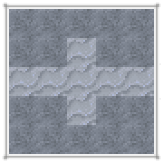
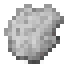
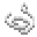
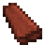
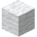
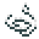
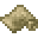
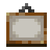

札札弄机杼
织布术是一种将线变为布匹的工艺。虽然将线织成布只需要织机就行了，但想要将产毛动物的毛捻成羊毛纱线就得先做一只纺锤。

纺锤头可以通过粘土塑形来制作。先将粘土如图捏成未烧制的纺锤头$，然后在将其加热即可。将纺锤头与木棍合成便能做出纺锤了



8

将羊毛与纺锤合成，得到羊毛纱.



可以用木材和木棍制作织机。

16
每 16 卷羊毛纱能够织成一匹羊毛布。首先，手持羊毛纱对准织机按右键。接着持续右键点击织机。待织机处理完整匹毛布后再次按右键就可以取下布匹了。


织机织布的几个不同阶段。
4
8

羊毛布可以合成成羊毛块。羊毛块可以染色。
24

织机可以将蛛丝织成丝绸。丝绸在某些配方中可以代替羊毛布。
12


黄麻纤维可以织成粗麻布，但现在看来它还是没有什么用的样子。


